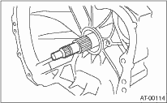
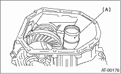

1. Remove the transmission assembly from vehicle body. 
2. Pull out the torque converter clutch assembly.
3. Remove the input shaft.

4. Lift-up the lever on the rear side of transmission harness connector, and then disconnect it from the stay.
5. Disconnect the inhibitor switch connector from the stay.

|
(A) |
Transmission harness ASSY |
|
(B) |
Inhibitor switch harness |
6. Remove the air breather hose.
7. Remove the oil charge pipe.
8. Remove the ATF cooler inlet and outlet pipes.
9. Remove the converter case alignment bolt, and then separate the transmission case and converter case by lightly tapping with a plastic hammer.
NOTE:
• Be careful not to damage the oil seal and bushing in the converter case with the oil pump cover.
• Do not loosen the rubber seal.

10. Remove the seal pipe.

|
(A) |
Seal pipe |
11. Remove the differential assembly.
12. Remove the oil seal from converter case.